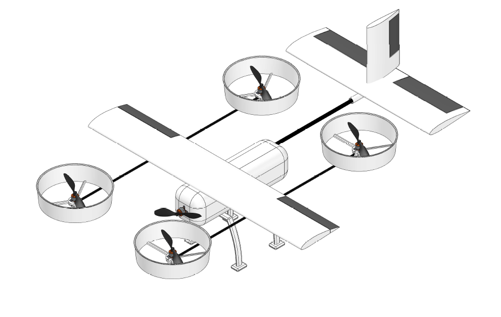

Design and Fabrication of Quad-Plane for All Terrain Applications
Led a team of four to design and fabricate a fixed-wing electric vertical take-off and landing (eVTOL) UAV with 1.2 m wingspan and 3 kg maximum take-off weight, optimized for medical supply delivery in all-terrain environments.
Conducted aerodynamic design in XFLR5, CAD modeling in SolidWorks, and CFD-based optimization with structural validation in Ansys Workbench. Designed and 3D-printed propeller ducts to improve propulsion efficiency and safety.
Supervised by Dr. Ashok B C at the Department of Mechanical Engineering, Vidyavardhaka College of Engineering, Mysuru.
Contributors
- Prithvi G
- Jayanth V
- Supriya A
Tools & Methods
- XFLR5: Aerodynamic analysis
- SolidWorks: CAD modeling
- Ansys Workbench: CFD optimization, structural validation
- 3D Printing: Component fabrication
Overview
UAVs are deployed in military and civilian applications without onboard personnel.
The Quad-Plane integrated quadcopter and fixed-wing principles using five propellers: four for vertical operations and one for forward propulsion. Motors rotated in opposing pairs for stability. Ducted propellers focused airflow to enhance thrust and lift efficiency.
The forward propeller enabled horizontal flight post-altitude achievement.
Specifications
| Parameter | Value |
|---|---|
| Airfoil Used | Wing: NACA 4415, Tail: NACA 0015 |
| Wing Span | 1.1 m |
| Wing Loading | 11 kg/m² |
| MTOW | 3 kg |
| Motor Specification | Brushless: 1000 KV (A2212) for quad, 1500 KV (Avionic C3536) for forward thrust |
| Battery Specification | 3-cell LiPo, 3300 mAh, 11.1 V, 25C discharge |
| Propeller | 10 x 4.5 inch |
Manufacturing and Assembly Gallery

Wing – Top & Bottom Views

Fuselage with motor and electronics mounted

3D Printing Bed Setup

(a) Assembled 3D printed Duct (b) 3D printed Quad-Rod connector
Conclusion
The Quad-Plane was designed, fabricated, and tested successfully. It demonstrated effective VTOL capabilities and smooth transition to forward flight. Ducted propellers enhanced thrust efficiency, extending endurance and range. XFLR5 analysis confirmed aerodynamic stability across conditions.
The design addressed all-terrain UAV needs, such as emergency medical deliveries, through a robust and cost-effective solution.
Acknowledgments
Thanks to Dr. Ashok B C for guidance, and team members Prithvi G, Jayanth V, and Supriya A for contributions.